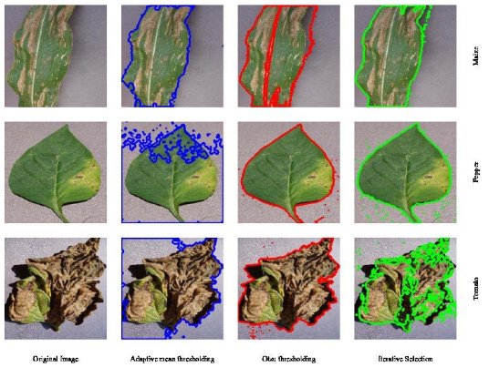

|
Pankhuri Vanjani
I am a PhD student in the Intuitive Robots Lab (IRL) at the Karlsruhe Institute of Technology (KIT), Germany supervised by Rudolf Lioutikov
My research focuses on Learning robust and explainable policies from multimodal modalities for robot tasks.
Previously, I obtained my Master Degree in Embedded Systems(Computer Science) at the Saarland University where I wrote my thesis at Max Planck Institute supervised by Vladislav Golyanik.
Email /
CV /
Google Scholar /
Github /
LinkedIn
|
|
|
Research
My research focuses on developing robust robot policies that can operate reliably in complex, real-world environments by leveraging multiple sensor modalities, such as vision, force, tactile, and language.
I aim to build intelligent embodied agents that learn fine grained manipulation skills to perform a given task.
This includes designing models adapting to sensor failures, noise, or incomplete observations, thereby improving resilience and reliability.
|
Communication and networking technologies for UAVs: A survey
Journal of Network and Computer Applications, 2020
sciencedirect
This paper aims at providing insights into the latest UAV (Unmanned Aerial Vehicle)
communication technologies through investigation of suitable task modules, antennas, resource handling platforms,
and network architectures.
Additionally, we explore techniques such as machine learning and path planning to enhance existing drone communication methods
|

Image processing-based intelligent robotic system for assistance of agricultural crops
International Journal of Social and Humanistic Computing, 2019
researchgate
This paper presents improved image processing algorithms for detecting leaf infections and uses k-means clustering for agricultural field classification in a heterogeneous robotic system.
The approach leverages a dataset of 3,150 crop disease images across three crop types, aiming to enable early disease detection and support mixed cropping via smart farming technologies.
|
|
{kind=link}